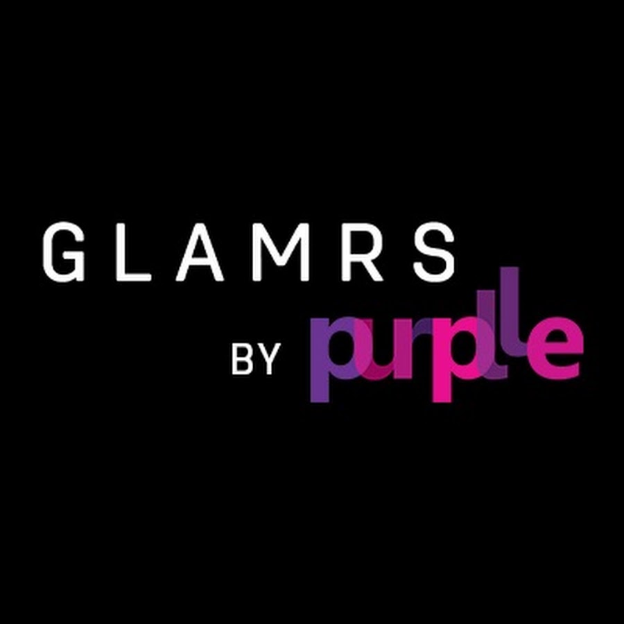

The Clear Skin Kit | Matte Melt | Super Spotless | Glamrs Beauty

Glamrs By Purplle
441 subscribers
472 views
.
1 year ago
Oily skin and constant breakouts are not impossible to deal with!
This kit has everything you need to achieve clear skin!
When skin gets trickier, you gotta hit back stronger!
Introducing “Better Together” twin sets.
1. Matte Melt is a fresh facial emulsion that balances skin's oil production,
controls untimely breakouts while assuring that your skin stays hydrated,
smooth and shine-free! Make it a habit to keep Matte Melt handy,
every time your face gets oily.
2. Super Spotless is a fresh, camphoraceous,
non-drying gel that pacifies early-stage pimples and
prevents angry bumps from sprouting and scarring your skin.
Just one dollop will help you handle your pimple crisis better.
Breakup with Blemishes - make it a thing!

1 Comment
Hey I have a question. That matte melt, can it be used as a moisturizer after face wash?
with thumbs up and down icons Reply